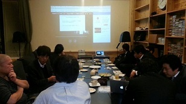
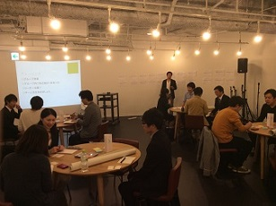

活動
定期ミーティング
イベント企画、意見交換、メンバーの交流を図ることを目的に、定期的にミーティングを行っています。
毎月第3水曜日19:00～21:00に開催開催しています。
毎回2本のショートプレゼンと相互交流を行っています。
- Code for Kitakyushuメンバーによる自己(社)紹介プレゼン(15分)
※基本立候補制 - Code for Kitakyushuメンバー外による自己(社)紹介プレゼン(15分)
各回の詳細・募集はconnpass（IT勉強会イベント情報サイト）のCode for Kitakyushuコミュニティページをご覧ください。

アイデアソン・ハッカソン
地域に役立つアプリケーションを生み出すためのイベント(アイデアソン・ハッカソン)を実施しています。
